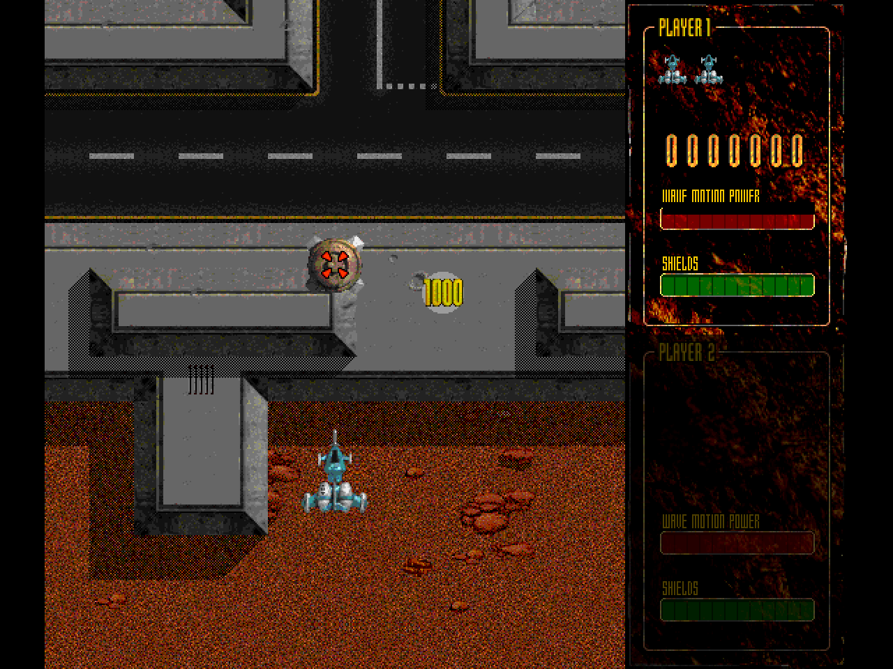
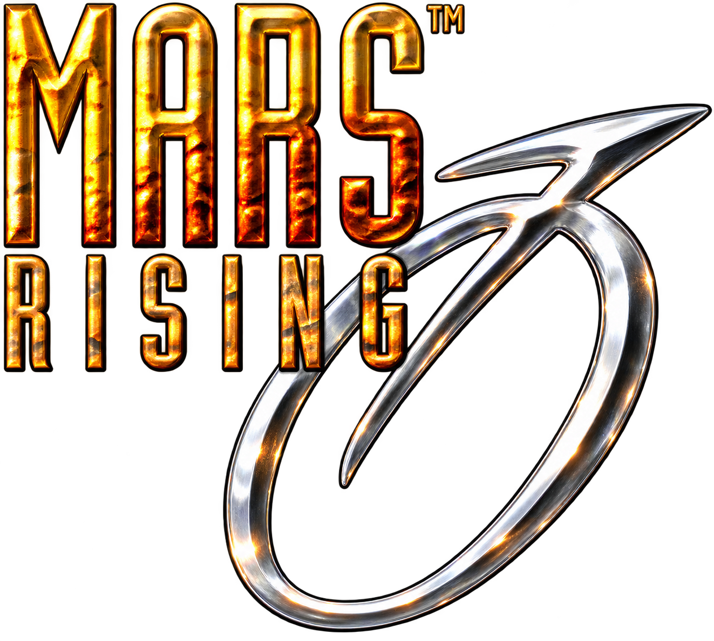

01 /
Air & ground
Use cannons against aircraft and rockets against turrets and tanks. When the crosshair turns red, your ground target is in range.
CLASSIC ARCADE. NATIVE MACOS.
One ship. A whole planet of enemies. The 1998 Mac arcade classic returns as a native macOS app. Fly solo or bring a wingmate, with classic pixel art or optional HD graphics. There’s always one more sector.
Apple Silicon & Intel Release ZIP

01 / THE GAME
Jump in. Hold your ground. Go again.
Mars Rising is a vertically scrolling arcade shooter created by David Wareing and published by Ambrosia Software. Dodge enemy formations, take out ground targets, and gather the firepower you need to make it through Mars’s landscapes and fortified bases.
Use cannons against aircraft and rockets against turrets and tanks. When the crosshair turns red, your ground target is in range.
Weapon upgrades, wingmates, shields, and the charged Wave Motion weapon. Collect stars and multipliers to push your high score higher.
Chase a high score solo or team up at one keyboard. Two ships, separate equipment, and one shared mission.
02 / SCREENSHOTS
Captured in the macOS port.
Select an image to take a closer look.
03 / TWO GRAPHICS MODES
The original look, or a fresh coat of paint.
Keep the classic pixel art or choose smooth, high-resolution redraws that follow the original designs. Switch during play or while paused, without restarting your run or changing the gameplay.
Ctrl+CSwitch between Classic and HD
Also available under Game → High-Resolution Graphics.
HD artwork is still being expanded. Some graphics retain the original artwork.

ORIGINAL SPIRIT. NEW ENGINES.04 / THE PORT
This independent port brings Mars Rising to modern macOS. Rebuilt with Swift and SpriteKit, it draws on the familiar maps, artwork, music, and sound effects of the original game.
The port is still being compared with the original. New releases bring fixes and refine gameplay, effects, and timing.
05 / FLIGHT SCHOOL
The default controls get you straight into the action. You can change your key bindings under Game → Controls.
When you need more power: Hold the fire key, then release it to unleash the Wave Motion weapon. Watch out for the overload warning.
PlayStation, Xbox, and compatible generic / MFi pads. Assign up to two gamepads and adjust rumble in Game → Controllers. Controller and rumble support depend on the macOS version, device, and connection.
06 / CLEARED FOR TAKEOFF
Get the ready-to-play app in a release ZIP.
Unzip it, move it to Applications, and take off.
Find the ZIP in the latest GitHub release.
ANY QUESTIONS?